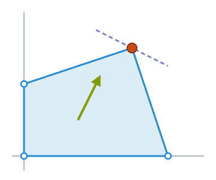
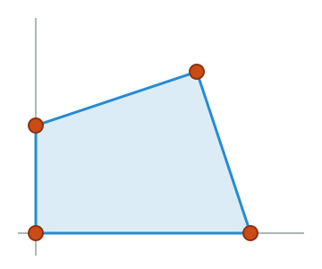
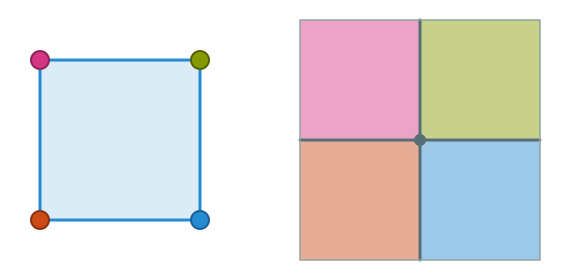

PDF version of these slides (demo: this PDF version is experimental and may contain errors or differ from the slides)
Primal
\[\begin{aligned} \max\quad &3x_1+4x_2-x_3\\ \text{s.t.}\quad &x_1+2x_2+x_3\le-1,\\ &2x_1+x_2-x_3=1,\\ &x_1-x_2+2x_3\ge-3,\\ &x_1\ge0,\ x_2\text{ free},\ x_3\le0. \end{aligned}\]
Dual
\[\begin{aligned} \min\quad &-y_1+y_2-3y_3\\ \text{s.t.}\quad &y_1+2y_2+y_3\ge3,\\ &2y_1+y_2-y_3=4,\\ &y_1-y_2+2y_3\le-1,\\ &y_1\ge0,\ y_2\text{ free},\ y_3\le0. \end{aligned}\]
The optimal primal solution: $x^*=(0,\,0,\,-1)$, with optimal value $1$.
| Primal | Dual | |
|---|---|---|
| Constraints $\leftrightarrow$ dual variables | ||
| $x_1+2x_2+x_3\le-1$ | $\leftrightarrow$ | $y_1\ge0$ |
| $2x_1+x_2-x_3=1$ | $\leftrightarrow$ | $y_2$ free |
| $x_1-x_2+2x_3\ge-3$ | $\leftrightarrow$ | $y_3\le0$ |
| Variables $\leftrightarrow$ dual constraints | ||
| $x_1\ge0$ | $\leftrightarrow$ | $y_1+2y_2+y_3\ge3$ |
| $x_2$ free | $\leftrightarrow$ | $2y_1+y_2-y_3=4$ |
| $x_3\le0$ | $\leftrightarrow$ | $y_1-y_2+2y_3\le-1$ |
| Primal at $x^*$ | Dual | |
|---|---|---|
| Constraints $\leftrightarrow$ dual variables | ||
| $x^*_1+2x^*_2+x^*_3=-1\le-1$ | $\leftrightarrow$ | $y_1\ge0$ |
| $2x^*_1+x^*_2-x^*_3=1=1$ | $\leftrightarrow$ | $y_2$ free |
| $x^*_1-x^*_2+2x^*_3=-2\ge-3$ | $\leftrightarrow$ | $y_3\le0$ (tight) |
| Variables $\leftrightarrow$ dual constraints | ||
| $x^*_1=0\ge0$ | $\leftrightarrow$ | $y_1+2y_2+y_3\ge3$ |
| $x^*_2=0$ (free) | $\leftrightarrow$ | $2y_1+y_2-y_3=4$ (tight) |
| $x^*_3=-1\le0$ | $\leftrightarrow$ | $y_1-y_2+2y_3\le-1$ (tight) |
Red: inequalities with slack at $x^* = (0,0,-1)$. Green: rows with no slack (tight).
We find from the previous considerations that for any dual optimal solution, $y_3=0$ (its primal constraint has slack), and the dual constraints for $x_2$ (free) and $x_3<0$ (sign constraint with slack) are tight:
\(\displaystyle y_3=0\)
\(\displaystyle 2y_1+y_2-y_3=4\)
\(\displaystyle y_1-y_2+2y_3=-1\)
There is a unique solution to these 3 equations in 3 unknowns.
\[y^*=(y_1,y_2,y_3)=(1,\,2,\,0).\]
Primal
\[\begin{aligned} \max\quad &4x_1+4x_2-3x_3\\ \text{s.t.}\quad &x_1+x_2+x_3=2,\\ &x_1-x_2+2x_3=5,\\ &2x_1+x_2-x_3=2,\\ &x_1\ge0,\ x_2\text{ free},\ x_3\ge0. \end{aligned}\]
Dual
\[\begin{aligned} \min\quad &2y_1+5y_2+2y_3\\ \text{s.t.}\quad &y_1+y_2+2y_3\ge4,\\ &y_1-y_2+y_3=4,\\ &y_1+2y_2-y_3\ge-3,\\ &y_1,y_2,y_3\text{ free}. \end{aligned}\]
The optimal primal solution: $x^*=(2,\,-1,\,1)$, with optimal value $1$.
| Primal | Dual | |
|---|---|---|
| Constraints $\leftrightarrow$ dual variables | ||
| $x_1+x_2+x_3=2$ | $\leftrightarrow$ | $y_1$ free |
| $x_1-x_2+2x_3=5$ | $\leftrightarrow$ | $y_2$ free |
| $2x_1+x_2-x_3=2$ | $\leftrightarrow$ | $y_3$ free |
| Variables $\leftrightarrow$ dual constraints | ||
| $x_1\ge0$ | $\leftrightarrow$ | $y_1+y_2+2y_3\ge4$ |
| $x_2$ free | $\leftrightarrow$ | $y_1-y_2+y_3=4$ |
| $x_3\ge0$ | $\leftrightarrow$ | $y_1+2y_2-y_3\ge-3$ |
| Primal at $x^*$ | Dual | |
|---|---|---|
| Constraints $\leftrightarrow$ dual variables | ||
| $x^*_1+x^*_2+x^*_3=2=2$ | $\leftrightarrow$ | $y_1$ free |
| $x^*_1-x^*_2+2x^*_3=5=5$ | $\leftrightarrow$ | $y_2$ free |
| $2x^*_1+x^*_2-x^*_3=2=2$ | $\leftrightarrow$ | $y_3$ free |
| Variables $\leftrightarrow$ dual constraints | ||
| $x^*_1=2\ge0$ | $\leftrightarrow$ | $y_1+y_2+2y_3\ge4$ (tight) |
| $x^*_2=-1$ (free) | $\leftrightarrow$ | $y_1-y_2+y_3=4$ (tight) |
| $x^*_3=1\ge0$ | $\leftrightarrow$ | $y_1+2y_2-y_3\ge-3$ (tight) |
Red: inequalities with slack at $x^* = (2,-1,1)$. Green: rows with no slack (tight).
The dual constraints associated with $x_1^*,x_3^*>0$ and with the free variable $x_2$ are tight for any dual optimal solution:
\(\displaystyle y_1+y_2+2y_3=4\)
\(\displaystyle y_1-y_2+y_3=4\)
\(\displaystyle y_1+2y_2-y_3=-3\)
There is a unique solution to these 3 equations in 3 unknowns.
\[y^*=(y_1,y_2,y_3)=(1,\,-1,\,2).\]
Recall Farkas' lemma.
Farkas' Lemma
For $A \in \R^{m \times n}$ and $b \in \R^m$, exactly one of the following two things holds:
We discussed a geometric proof of this using the separating hyperplane theorem and now we will prove it using strong duality.
We have already seen that if there is $y$ so that $A^{\intercal}y \ge 0$ and $b^{\intercal}y < 0$, then there cannot be an element of the set $\{x\in \R^n : Ax = b, x \ge 0\}$. If there were, then \[ \underbrace{y^{\intercal}Ax}_{\qquad \ge 0\\A^{\intercal}y \ge 0, x \ge 0} = \underbrace{y^{\intercal}b}_{<0}. \]
So to prove the other direction, we will need strong duality. What LP are we going to apply the strong duality theorem to?
Consider the linear program \[ \begin{aligned} \max\qquad & \vec{0}^{\intercal}x \\ \text{s.t.}\qquad & Ax = b \\ & x \ge 0 \\ \end{aligned} \]
This is infeasible precisely when the set $\{x\in \R^n : Ax = b, x \ge 0\}$ is empty.
Strong duality implies that the dual LP does not have an optimal solution (if it did, then the primal LP would have an optimal solution by strong duality).
So the dual LP is either unbounded or infeasible.
The dual LP is \[ \begin{aligned} \min\qquad & b^{\intercal}y \\ \text{s.t.}\qquad & A^{\intercal}y \ge 0 \\ \end{aligned} \]
Why is this feasible?
It's feasible since $y = 0$ is feasible.
Since the dual LP is unbounded, we have seen that there must in particular be a feasible $y$ so that $b^{\intercal} y < 0$.
We conclude that there is some $y$ so that $A^{\intercal}y \ge 0$ and $b^{\intercal}y< 0$, which is what we wanted.
We can use more general linear programming duality results to get other versions of Farkas' lemma:
Farkas' Lemma Version II
For $A \in \R^{m \times n}$ and $b \in \R^m$, exactly one of the following two things holds:
We can prove this by noting that the dual of the linear program \[ \begin{aligned} \max\qquad & \vec{0}^{\intercal}x \\ \text{s.t.}\qquad & Ax \le b \\ \end{aligned} \qquad \text{ is } \qquad \begin{aligned} \min\qquad & b^{\intercal}y \\ \text{s.t.}\qquad & A^{\intercal}y = 0 \\ & y \ge 0 \\ \end{aligned} \]
The feasible region of a linear program is a polytope, and we have seen that (typically) the unique maximizer of a linear function over a polytope is a vertex of that polytope.

$x^*$\[\begin{aligned} \max\quad &x_1+2x_2\\ \text{s.t.}\quad &x_1\ge0,\\ &x_2\ge0,\\ &3x_1+x_2\le12,\\ &-x_1+3x_2\le6. \end{aligned}\]
So while there are infinitely many possible objective directions $c$, there are only finitely many possible outcomes of the optimal solution of the LP.

$x^*$\[\begin{aligned} \max\quad &c^{\intercal}x\\ \text{s.t.}\quad &x_1\ge0,\\ &x_2\ge0,\\ &3x_1+x_2\le12,\\ &-x_1+3x_2\le6. \end{aligned}\]
For each vertex $v$ in a polytope $P$, we define the normal cone $N_v$ to be the set of $c$ so that the maximizer of the linear program $\max \{c^{\intercal}x : x \in P\}$ is $v$: \[ N_v = \{c \in \R^n : \text{For any }x \in P,\; c^{\intercal}v \ge c^{\intercal}x \}. \]
Normally, with linear programming, we are given the objective direction $c$ and want to find a vertex $v \in P$ maximizing $c^{\intercal}v$; the normal cone flips this idea on its head.
Can we get a more explicit description of the normal cone of a polytope?
Normal Cone Characterization (SEF Polytopes)
Suppose that $P = \{x \in \R^n : Ax = b, x \ge 0\}$, and let $v \in P$ be a vertex (i.e. a basic feasible solution). Then $c \in N_v$ if and only if there exists some $y \in \R^m$ so that \[ c \le A^{\intercal}y, \] and $c_i = (A^{\intercal}y)_i$ whenever $v_i > 0$.
This is really a rephrasing of complementary slackness.
Example of Theorem
Consider a polytope defined by \[ P=\{x\in\R^4:Ax=b,\ x\ge0\} \text{ with }\] \[ A=\begin{pmatrix}1&1&1&0\\1&3&0&1\end{pmatrix},\quad b=\begin{pmatrix}4\\6\end{pmatrix}. \]
Here is a vertex of this polytope: $v=(3,1,0,0)$.
Let's use the theorem to check that $c=(3,5,1,0) \in N_v$ (i.e. $v$ is a maximizer of $c^{\intercal}x$ in $P$).
Let $y = (2,1)$, and note that $A^{\intercal}y = (3,5,2,1)$. We see that \[ c = A^{\intercal}y - (0,0,1,1). \]
Proof of Theorem
$c$ is in $N_v$ if and only if $v$ is an optimal solution of the following linear program: \[ \max \{c^{\intercal}x : Ax = b, x \ge 0\} \]
The dual linear program is \[ \min \{b^{\intercal}y : A^{\intercal}y \ge c\}. \]
Strong duality implies that the dual linear program is feasible, so there is some $y$ so that $A^{\intercal}y \ge c$, and by complementary slackness, we know that $(A^{\intercal}y)_i = c_i$ whenever $v_i > 0$.
The above theorem shows one characterization of the normal cone, but it does not make it easy to check if a given $c$ is in the normal cone without solving a linear program. We can give a simpler characterization (at least when the vertex is nondegenerate).
Normal Cone Characterization (SEF Polytopes)
Let $P=\{x:Ax=b,\ x\ge0\}$, and let $v$ be a vertex of $P$ with basis $B$ with $m$ positive entries (so $v$ is nondegenerate). For each $c$, we can break up its coordinates into those coordinates in the basis $B$ and those outside it: $c = \begin{pmatrix}c_B & c_N\end{pmatrix}$. \[ N_v=\{c\in\R^n : c - A^{\intercal}A_B^{-\intercal}c_B\le0\}. \]
Proof of Theorem This can be seen from the terminal condition of the simplex method.
We can also see it from complementary slackness; using these dual LPs:
$\max \{c^{\intercal}x : Ax = b, x \ge 0\}$
$\min \{b^{\intercal}y : A^{\intercal}y \ge c\}.$
Complementary slackness implies that $v$ is an optimal solution to the primal LP if and only if there is a feasible $y^*$ for the dual LP that satisfies $(A^{\intercal}y)_i = c_i$ whenever $v_i > 0$.
This implies that the unique such $y^*$ is precisely $y^* = A_B^{-\intercal}c_B$.
Plugging in, we get that $v$ is an optimal solution to the primal LP if and only if $A^{\intercal}A_B^{-\intercal}c_B \ge c$, which is what we wanted to show.
We can also characterize normal cones for polytopes described by inequalities.
Normal Cone Characterization (Polytopes $Ax \le b$)
Suppose that $P = \{x \in \R^n : Ax \le b\}$, and let $v \in P$ be a vertex. Then $c \in N_v$ if and only if there exists some $y \in \R^m$ so that \[ c = A^{\intercal}y, \qquad y \ge 0, \] and $y_i = 0$ whenever $(Av)_i < b_i$.
One way to think of this is as follows: for each $v$ in $P$, there is a collection of tight constraints, $a_1^{\intercal}x \le b_1, \dots, a_k^{\intercal}x \le b_k$ where $k \ge n$, and where $a_i^{\intercal}v = b_i$ for each $i$. We then have that the normal cone is \[ N_v = \{\sum_{i=1}^k y_i a_i : y \ge 0\}. \]
Let's recall that the $n$ dimensional hypercube is the polytope defined by \[ P = \{x \in \R^n : 0 \le x_i \le 1 \text{ for }i=1,\dots,n\}. \]
So $A = \begin{pmatrix} I \\ -I\end{pmatrix},$ and $b = \begin{pmatrix} \vec{1}\\\vec{0}\end{pmatrix}.$
A vertex $v$ of $P$ is a point where $n$ of the constraints are tight, i.e. a point where every entry is either 0 or 1.
The tight constraints at $v$ have normals $e_i$ (when $v_i=1$) and $-e_i$ (when $v_i=0$), so \[ N_v=\{c\in\R^n : c_i\ge0 \text{ if } v_i=1,\ c_i\le0 \text{ if } v_i=0\}. \]
